Free Course
SNS占い講座
全4回 無料講座
WEEK 01
第1回：占い業界を知ろう
「SNS占いって稼げるの？」の
不安を解消する回
WEEK 01 — 01
占い市場はめちゃめちゃ大きい
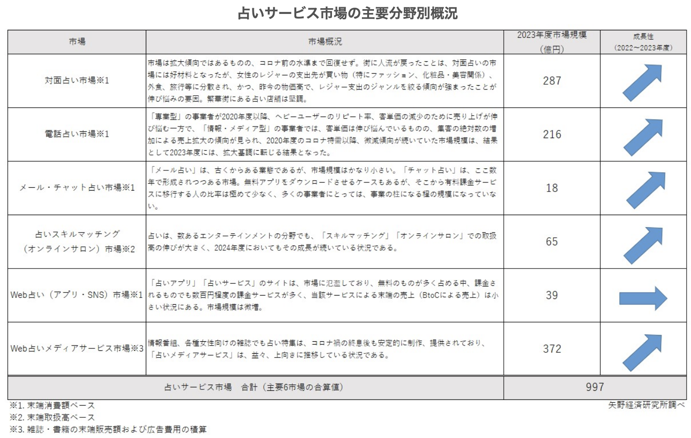
WEEK 01 — 02
占いは利益率が異常に高い
本屋さん
本を1冊売って
数十円の利益
仕入れ・在庫あり
VS
占い
9,800円で売ったら
9,000円が利益
仕入原価なし・在庫なし・初期投資なし
さらに SNS占い なら
顔・声出し不要
→
副業がバレない
外注化ができる
→
時間がない人でも大丈夫
複数アカウント運用
→
ノウハウを使いまわせる
AIを活用できる
→
占いの知識がなくてもできる
時間拘束がない
→
返せる時に返せばOK
WEEK 01 — 03
占いとスピリチュアルの違い
占い
まだ受け入れやすい
統計・理論ベース
四柱推命、西洋占星術など
→ 情報提供がメイン
→ 論理的・再現性がある
スピリチュアル
怪しいイメージ強い
感覚・霊的ベース
霊視、チャネリングなど
→ 体験提供がメイン
→ 顧客単価が高い
SNS占いは実はスピリチュアル寄りが多い。
表はスピリチュアル、裏は占いの理論で支える。
その占いをAIで補うことで、ブレずに占える。
WEEK 01 — 04
スピリチュアルのほうが市場規模が大きい
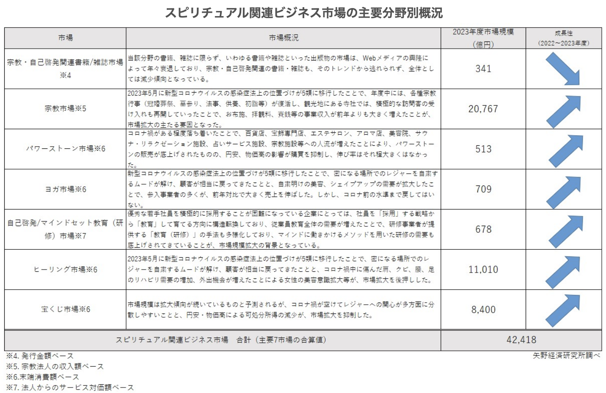
WEEK 01 — 07
100人に無料鑑定すると…？
WEEK 01 — 08
何を売るのか
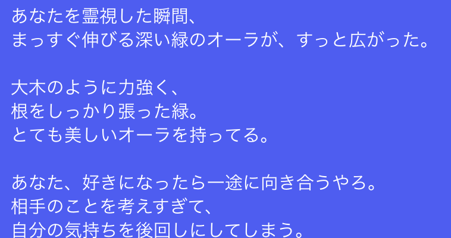
結構ガチで鑑定する。ここで信頼を獲得するのが大事。
かなりしっかり鑑定。過去や将来のことも伝える。
必要なことを必要最低限書くのがコツ。
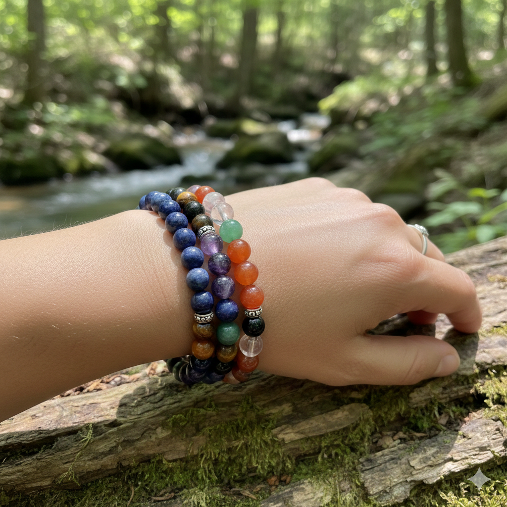
WEEK 01 — 09
他の副業と比較してみよう
初期費用
1アカウント750円
×20〜30個
仕入れ資金
数万〜数百万円
0〜3,000円
商品単価
300〜700円
500〜3,000円
高単価も可能
継続しやすさ
あまりない
資金がなくなったら終わり
リピーター◎
人に言える？
絶対に言えない
ギリ言える
ギリ言える
WEEK 01 — 06
やり方にはいろんな流派がある
🛒
メルカリ・ココナラで300円の少額鑑定 → 有料鑑定へ
💬
インスタのDMで無料鑑定をする人
📩
LINEに誘導して鑑定する人
📱
スレッズ＋インスタで集客 → インスタDMで鑑定
僕のやり方
📝
成功事例をnoteで販売 / コンサル / タロット教室（50万円）
WEEK 01 — 08
始めるのに必要なもの
意外とお金がかからない。ほぼ0円でスタートできる。
WEEK 01 — 09
売上のリアル
2〜3ヶ月目で
30〜40万円
特別な才能がなくても、着実に稼げる
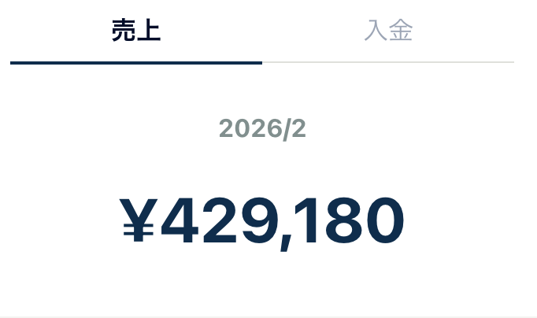
WEEK 01 — 07
この4回で手に入るもの
WEEK 01
SNS占い業界の全体像と稼ぎ方の地図今ここ
TODAY
WEEK 02
自分に合った占いの選び方＋AIで誰でもできる方法占いの知識がなくても大丈夫
WEEK 03
バズる投稿の作り方＝フォロワー・集客の入り口伸びる投稿のパターンを掴む
WEEK 04
無料→有料の導線設計＋売上を自動で増やす仕組みアカウント開設から最初の売上まで
今日ここに来た時点で、もう迷わなくていい。
WEEK 02
第2回：占いは何を選べばいい？
占いがわからなくても大丈夫
大事なのは"伝わるかどうか"
WEEK 01 — まとめ
第1回の振り返り
01
占い市場はめちゃめちゃ大きいスピリチュアル含め1兆円規模
02
利益率が異常に高い原価なし・在庫なし・初期投資なし
03
SNS占いは副業向き顔出し不要・時間拘束なし・AI活用OK
04
稼ぎ方はシンプル無料鑑定 → 有料鑑定 → アップセル
WEEK 02
今日のテーマ
どんな占いを
選べばいいのか？
占いがわからなくても大丈夫
大事なのは"伝わるかどうか"
WEEK 02 — 01
みなさん、どんな占いを知ってますか？
血液型
星座
手相
四柱推命…
WEEK 02
初心者がやりがちなミス
とにかく難しい、
なんか権威的な占術を選ぶ
▼
お客様が全然こない
▼
占いって稼げないんだ…
WEEK 02 — 04
占いが好きな人でも
四柱推命を知ってる人は少ない
もっと深い占術になると
誰も知らない
→ 難しい占術を出せばいい
って訳ではない
大切なのは占術ではなく、
お客様をどうやって救うか。
WEEK 02 — 05
SNSで一番伸びるのは「霊視」
占術に縛られない
→
広く取れる
「見えます」の一言で
→
コンテンツになる
SNSとの相性
→
抜群
WEEK 02 — 06
でも霊視なんて
できない…
WEEK 02 — 07
裏と表を使い分ける戦略
表：霊視
FRONT — お客さんが見る側
伝わりやすい
多くの方の目に触れる
お客様がきやすい
占いに興味はないけど
救われたい方が来る
裏：四柱推命
BACK — 自分だけが使う側
精度を保つ
理論に裏付けがある
どんなお客さんでも対応できる
AIで鑑定文を量産できる
本当にあってるのか…？
みたいな疑問が湧きにくい
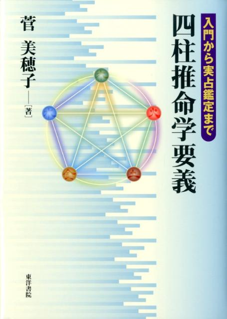
WEEK 02 — 08
AIが占いをサポートするから
誰でもできる
占いの知識がなくてもAIが補ってくれる
最初から難しい占術を学ぶ必要はない
自信をもって占いができる
でも注意してほしい点が一つ…
WEEK 02 — 09
AIはあくまでも補助ツール！
AIに突っ込んで、出た文章を
そのまま横流しするのは言語道断
占いはあくまで寄り添い
相手の悩みに親身に寄り添って
解決のために一歩踏み出せる様に
背中を押すことが大事
WEEK 02 — 10
実際の鑑定文①
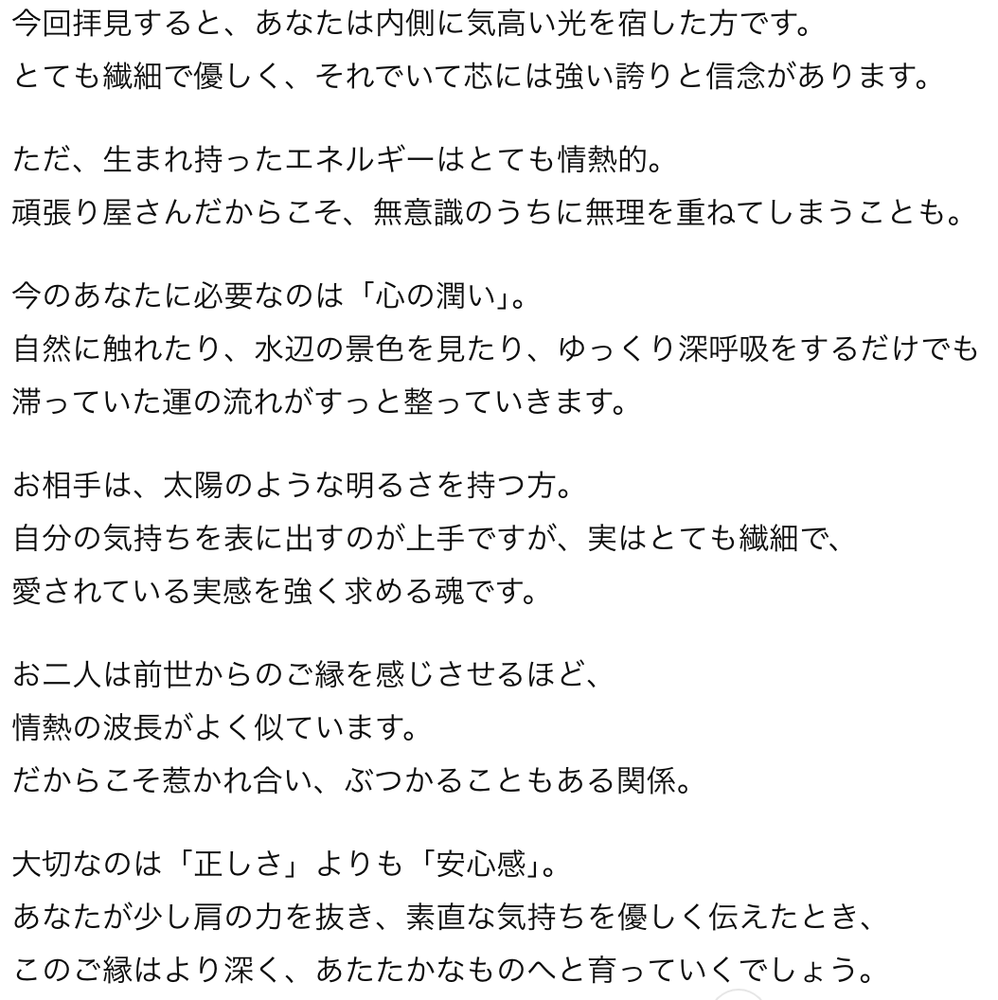
WEEK 02 — 10
実際の鑑定文②
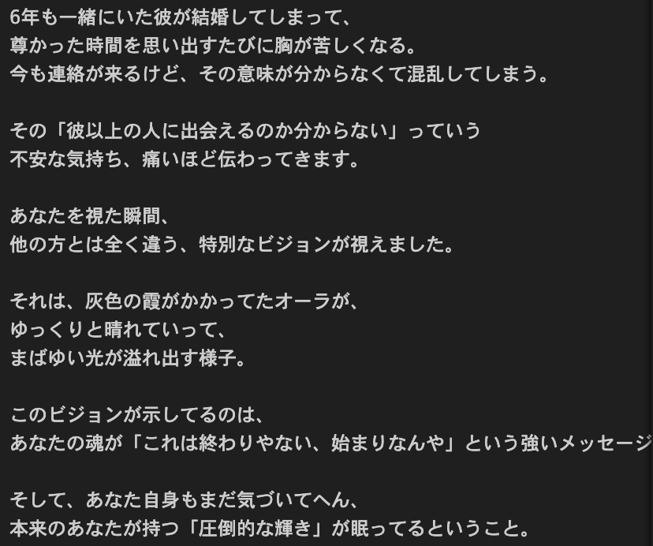
WEEK 02 — 11
実際の鑑定フロー
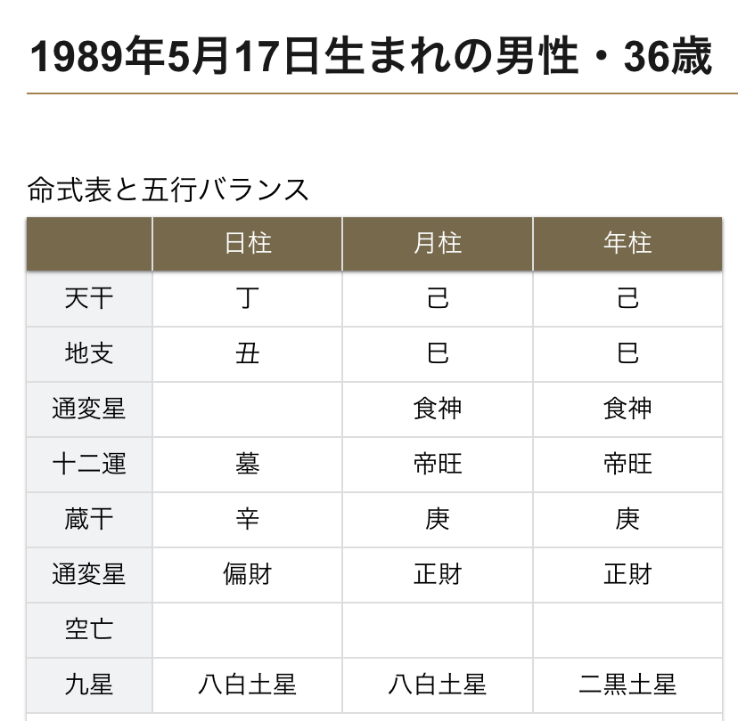
▼
▼
▼
内容がおかしくないか
寄り添えているか
背中を押せているかチェック
▼
WEEK 02 — 12
お客様の感想
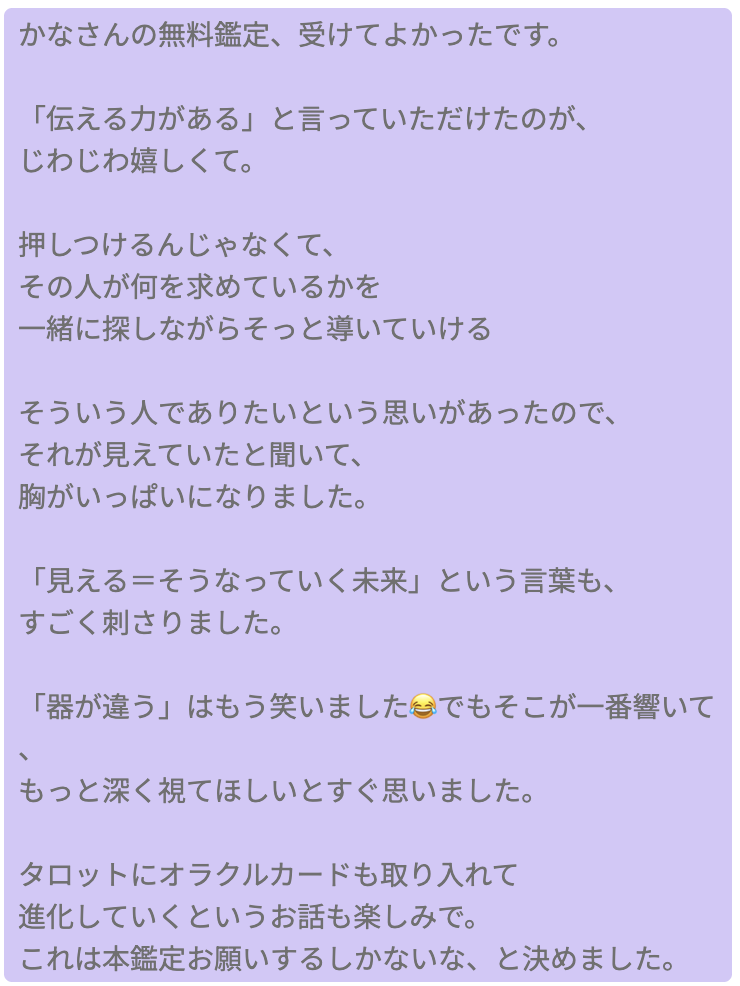
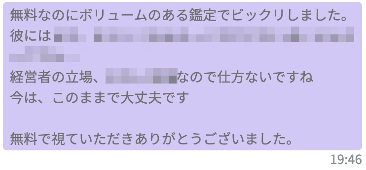
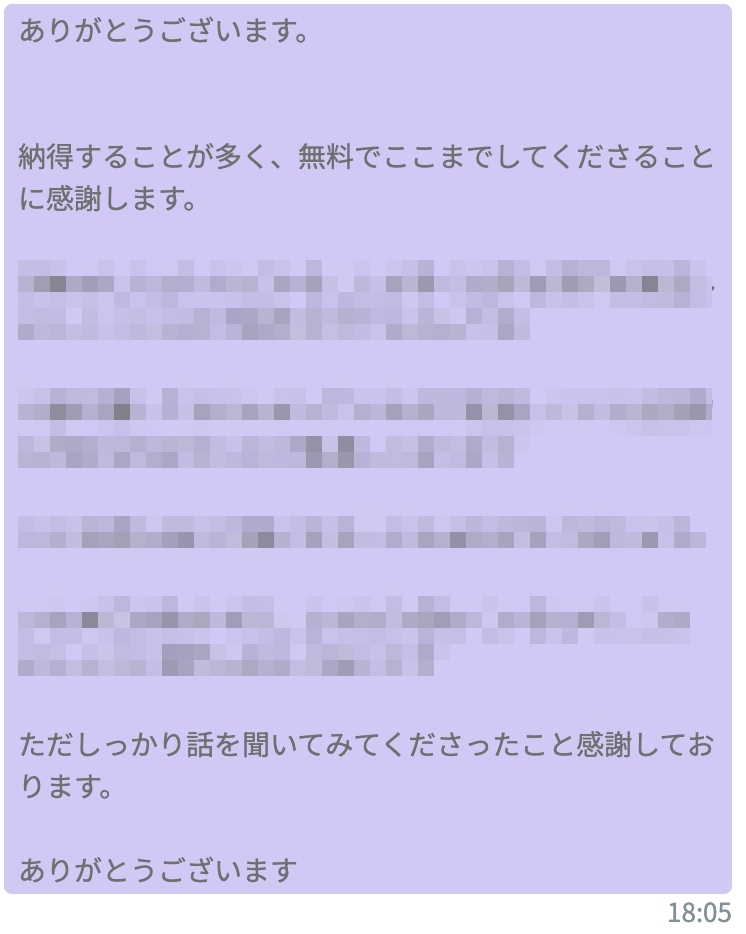
WEEK 02 — 14
実際のやりとり
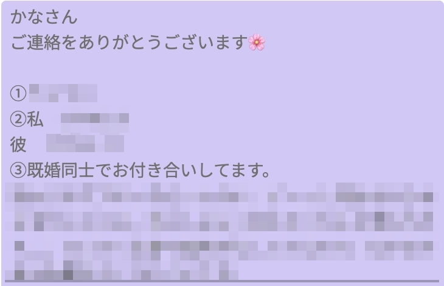
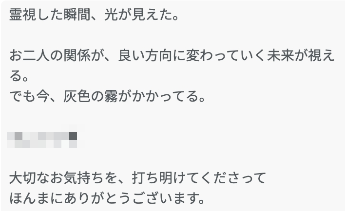
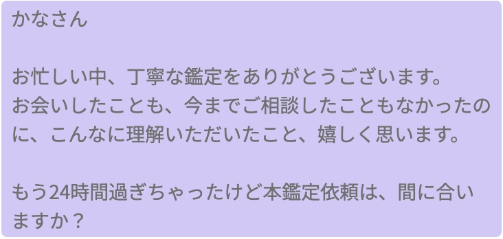
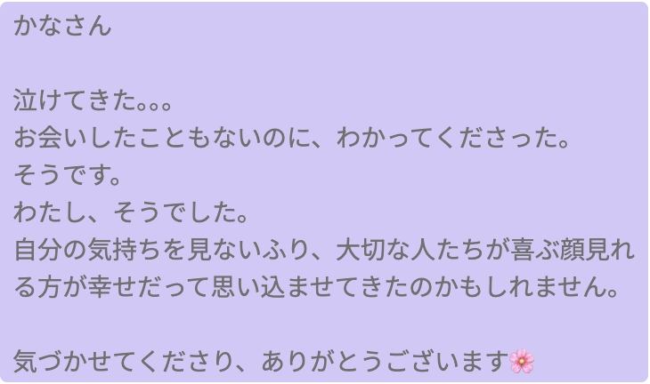
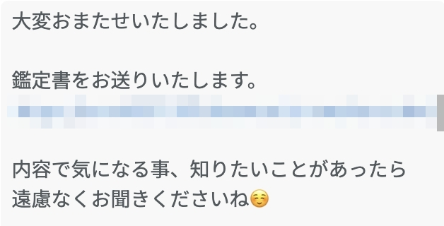
WEEK 02
次に気になるのは
本当に無料鑑定が来るのか
どうやったら無料鑑定が来るのか
ですよね！
WEEK 02
僕がやっているのは
スレッズ運用
スレッズで占いのお客様を集めて、
インスタのDMで鑑定しています。
WEEK 02
なので
スレッズでの認知度を上げること
=
スレッズでバズる投稿を
沢山することが大切
WEEK 03
第3回：バズる占い投稿の作り方
なぜバズらせないといけないのか？
＋バズ投稿実践
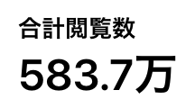
WEEK 03 — CONTENTS
第3回の内容
01
なぜバズらせないといけないのかフォロワー少ない＝お店に誰も来ない状態
02
伸びてる投稿をみんなで分析占い系＋他ジャンルのバズ投稿を紹介
03
共通点の答え合わせ＋キャッチコピーの型最初は何も考えずにパクってOK
04
アカウントの属性を意識する属性によって伸びるもの・伸びないものがある
WEEK 03 — 01
SNS占い収益のポイント
結論
無料鑑定の数
をいかに沢山取るか
WEEK 03 — 02
SNS占いで収益が発生する流れ
無料鑑定が沢山来れば来るほど
有料鑑定は売れる
WEEK 03 — 03
じゃあどうやって無料鑑定を集めるか
WEEK 03 — 04
初心者が陥りがちな罠
小手先で難しいところに挑戦しがち
アカウントの内容にこだわる
noteを書いちゃったりする
占術に悩む
無料鑑定の文章を磨く
1回でバズる投稿を作ろうとする
全部あまり重要ではない
WEEK 03 — 06
伸びてる投稿を分析
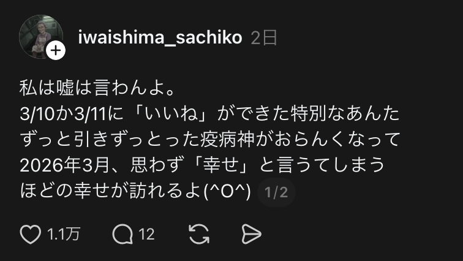
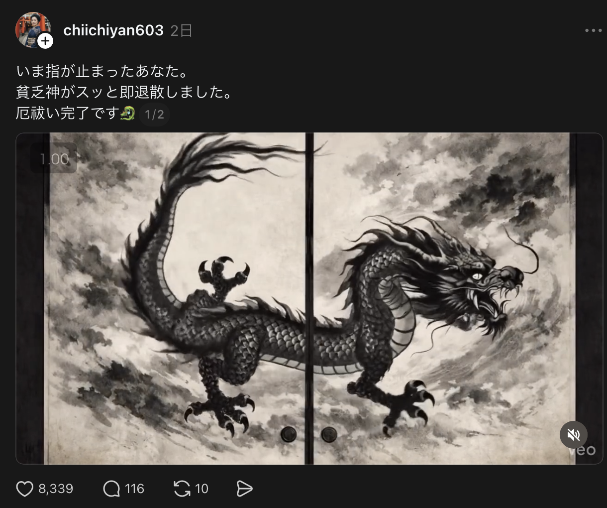
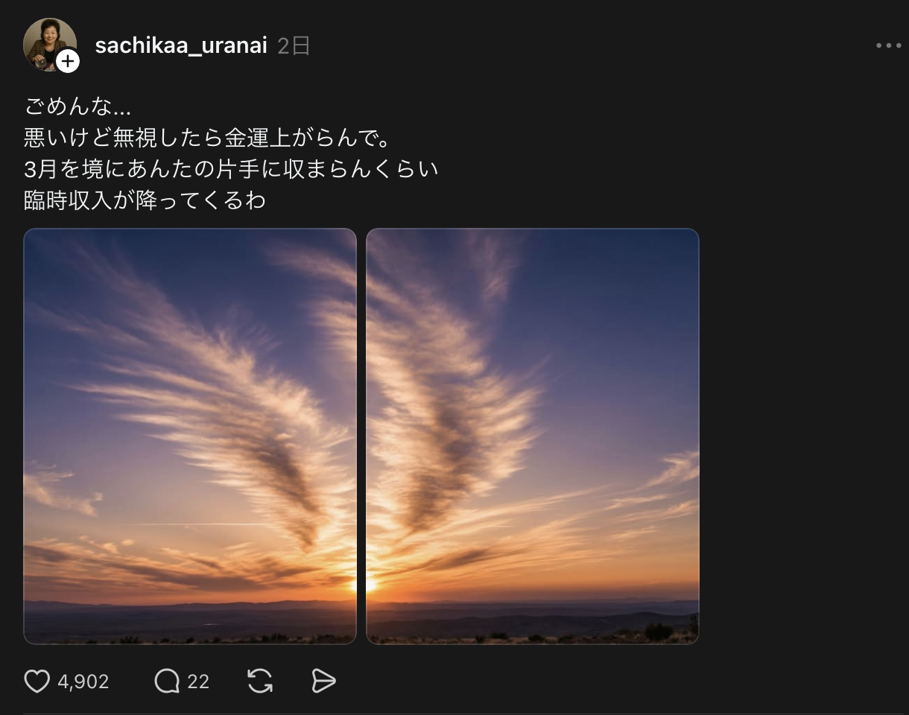
WEEK 03 — 08
バズった投稿をパクる ≠ 伸びる
01
アカウントの属性によっては、
伸びたり伸びなかったり金運系のアカウントで恋愛系のバズった投稿を真似る → 伸びない
02
投稿によって伸びるタイミング、
伸びないタイミングがある半年前にやたらと流行った投稿 → 今やっても伸びない可能性がある
何も考えずにパクる
→ 全然伸びない
自分の属性、ペルソナにあった投稿をパクる
自分の属性とは違う投稿を、
自分の属性に変えちゃう
→ 伸びる
WEEK 03 — 09
実際の運用：意外とめんどくさい
01
1日に5〜30投稿数をこなすことが大事
02
伸びないやつは除外また新しい文章を作ってテスト
03
ツールでバズ投稿を収集簡単に参考事例を集められる
04
AIで自分風に書き換え一発で自分のアカウントっぽく変換
だからAIを使って効率化！
WEEK 03 — 10
AIを使う人と使わない人
AIを使わない人
ちまちま自分なりに作業
↓
時間がかかる
↓
なかなか結果が出ない
↓
モチベが上がらない
↓
諦める
AIを使える人
大量にデータを集めて
大量に捌いて
高速でPDCAを回す
↓
良い結果も悪い結果も
すぐに出る
↓
AIを使って改善
↓
結果が出る
↓
モチベが上がる
↓
稼げる
WEEK 03 — 11
才能は努力でカバーできる
アカウントが伸びる・伸びないは
才能も大事だけど…
努力の量を爆発的に増やせるのが
AI
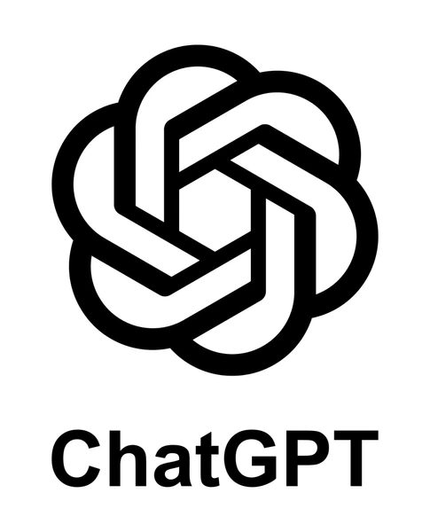
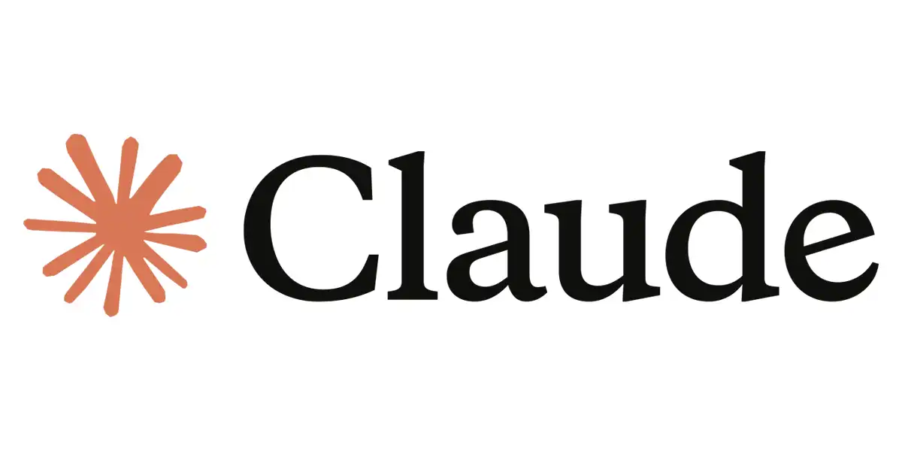
努力量をAIで爆発的に増幅させないと
副業で効率的に稼ぐのは難しい。
WEEK 03 — SUMMARY
第3回まとめ
01
全ての収益は「無料鑑定の数」から始まる小手先のことより、まず数を集める
02
伸びる投稿 × 投稿回数 が全てバズ投稿を分析して、とにかく数をこなす
03
完璧を目指さない、PDCAを高速で回す「多分こうかな」でやってみて、改善を繰り返す
04
AIを使って効率化は必須副業で時間がない人こそ、AIで努力量を増幅させる
お金も稼げて、AIスキルも身につく
一石二鳥なのがSNS占い
WEEK 04
第4回：収益化の仕組みを作ろう
売上の作り方と
さらに伸ばす仕組み
WEEK 03 — REVIEW
前回の振り返り
01
なぜバズらせないといけないのかフォロワー少ない＝お店に誰も来ない状態
02
伸びてる投稿を分析＋キャッチコピーの型最初は何も考えずにパクってOK
03
アカウントの属性を意識する属性によって伸びるもの・伸びないものがある
結論：無料鑑定の数をいかに沢山取るか
WEEK 04 — CONTENTS
第4回の内容
01
売上を上げるまでの導線SNS投稿→フォロー→LINE→無料鑑定→有料鑑定
02
アップセル・ダウンセルの仕組み売上をさらに伸ばす具体例を解説
WEEK 04 — 01
売上を上げるまでの流れ
流派によっていろいろ！
パターン1
メルカリ・ココナラ
安く販売
▼
アップセル
▼
パワーストーン等
パターン2
スレッズ→公式LINE
スレッズ
▼
公式ライン
▼
無料鑑定
パターン3
スレッズ→インスタDM
スレッズ
▼
インスタDM
▼
無料鑑定
WEEK 04 — 01
スレッズやインスタ集客がおすすめ！
01
無料で鑑定ができる
02
ユーザーに占いに興味がある女性が多い
03
SNSだから人が沢山いる
WEEK 04 — 01
僕がココナラ・メルカリをやらない理由
ココナラ・メルカリ
少額でも売れる占いにしないといけない
VS
スレッズ
無料だから気軽に受けてくれる
価値を感じたら有料鑑定を買ってくれる
結論：どの方法でもOK！
でも1つの方法に集中すること！！
WEEK 04 — 01
実際どんな感じで売れるのか
気になりませんか…？
WEEK 04 — 01
一度、どんな風になりそうか
想像してみてください。
もしあなたが9,800円の有料鑑定を
全く会ったこともない、
声を聞いたこともない方に販売する場合
なんと言って売りますか…？
WEEK 04 — 01
こちらが実際のやり取りです
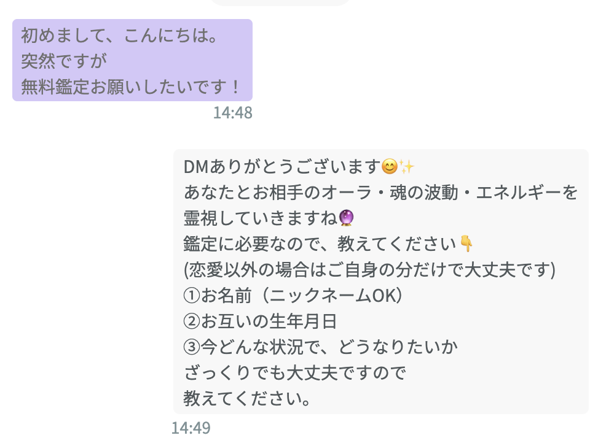
WEEK 04 — 01
こちらが実際のやり取りです
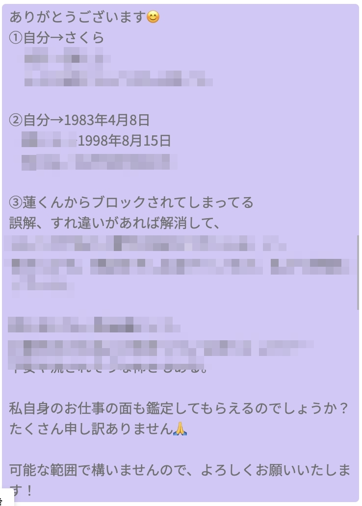
WEEK 04 — 01
こちらが実際のやり取りです
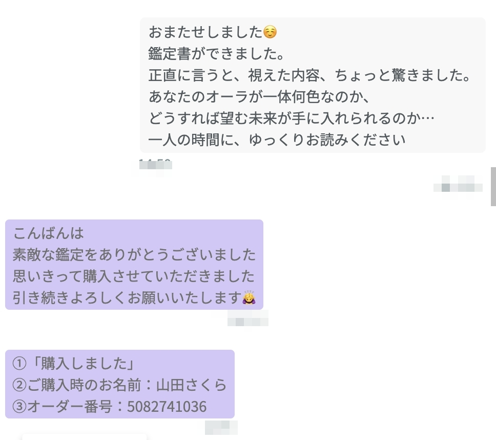
WEEK 04 — 01
有料鑑定の販売は不思議な感じ
パターン2
無料鑑定を送る
↓
熱い感想が来る
↓
購入される
沢山やり取りをしたり、
細やかなやり取り、セールスの文章は不要です。
WEEK 04 — 01
しかもこの文章はほぼAIで作っています
自動返信＆AIが作った文章で
9,800円の鑑定文が売れます。
しかも、ここで終わりじゃありません
WEEK 04 — 02
01
アップセル
02
クロスセル
03
ダウンセル
04
ローンチ
が控えています。
専門用語なので次のページで説明します。
WEEK 04 — 02
売上を伸ばす4つの手法
01
アップセル購入者にさらなるサービスを提供
（醤油ラーメン→特製ラーメンにしませんか？）
02
クロスセル購入者に補助的なサービスを提供
（煮卵、チャーシューご飯はいかが？）
03
ダウンセル購入しなかった方に安いサービスを提供
（ハーフチャーシュー丼だけでもどう？）
04
ローンチフォロワーの方に何か売る戦略
（新商品！激ニボラーメン発売開始！）
WEEK 04 — 02
実際どうやるか
有料鑑定を買ってくださった方に
ヒーリング、パワーストーン、除霊、浄化サービスを販売したり
パワーストーンを買ってくださった方に
浄化サービスを販売したり
遠隔ヒーリングを販売したり…
いろんな方法でサービスを提供して
お客様からお金をもらうことができるのが
SNS占いなんです。
WEEK 04 — 02
実際に僕が提供しているサービス
パワーストーン販売
松竹梅で販売
6万円〜2万円
原価率30％程度
遠隔オーラ調整
サービス提供
3,980円
原価率0%
ピンポイント鑑定
サービス提供
4,980円
原価率0%
WEEK 04 — 02
これは見せたくないんですが…
実際のやり取りをお見せします
WEEK 04 — 02
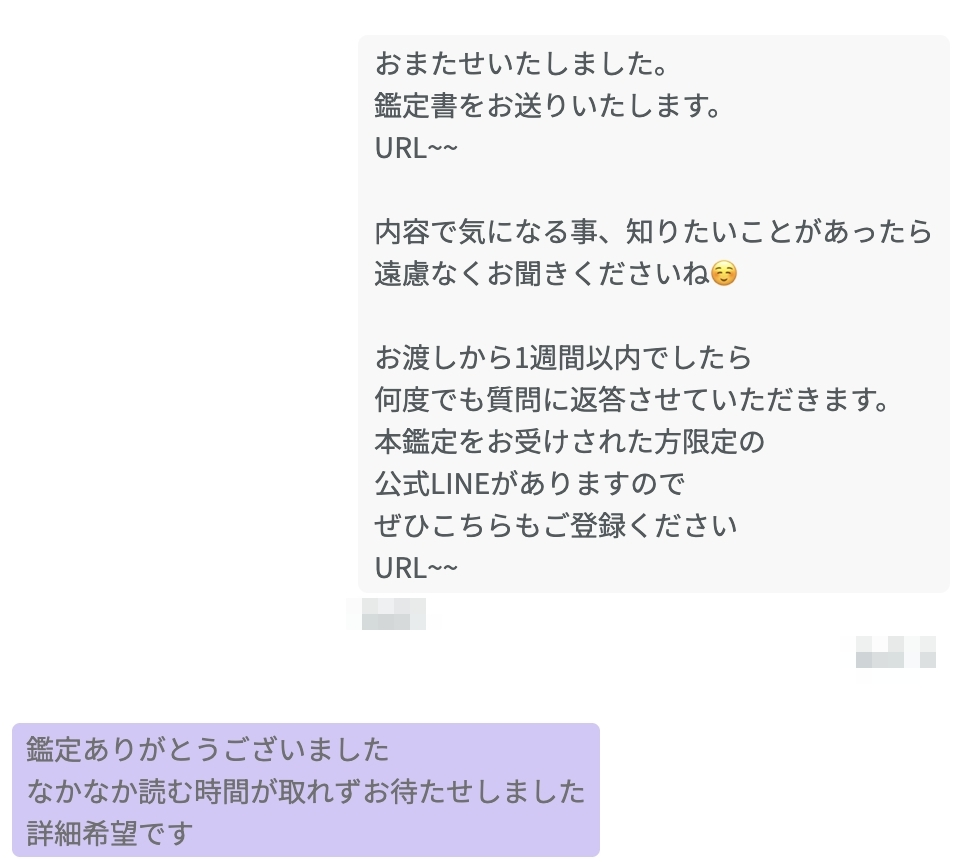
WEEK 04 — 02
アップセルの流れ
パワーストーン
有料鑑定を販売
▼
鑑定文に説明
▼
詳細を案内
▼
購入される
遠隔オーラ調整
フォロワーにDM
▼
オーラ調整の説明
▼
購入→実施
▼
フォローメッセージ
WEEK 04 — SUMMARY
第4回のまとめ
01
無料鑑定→有料鑑定は特に売り込まなくてもちゃんと売れる
02
有料鑑定を受けてくださった方には追加のサービスを売って売上を伸ばす
03
購入しなかった方には新しいサービスを提供して売上を伸ばす
これがSNS占いの売上の伸ばし方です！
CLICK TO ADVANCE